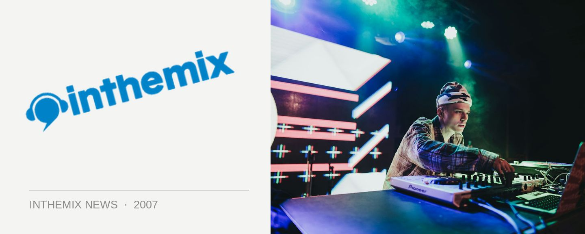

Fondue Funk gets up and running this weekend
If a live funk band together with house music sounds like your thing, get yourself down to the Bodhi Bar this Saturday. Fondue Funk is a new collective formed around live pop/funk band The Clarity Project and a DJs Groove Addix, and organisers are promising a fresh night that steers clear of self-absorbed DJs and nasty bouncers.
The Clarity Project claims to take inspiration form the short purple man himself Prince, and have been gigging at venues like the Basement and the Annandale Hotel over the past year. You can catch them this Saturday at the Bodhi Bar, underneath the forecourt of St Mary’s Cathedral, which boasts a big outdoor courtyard that sits in the foliage of Cook & Phillip Park. It’s only a minutes walk from the CBD, the Cross, Woolloomooloo and Oxford St.
Get on down to check out the new venue this Saturday. Entry is only $5, DJs are playing from 8pm with The Clarity Project on at 10pm sharp.